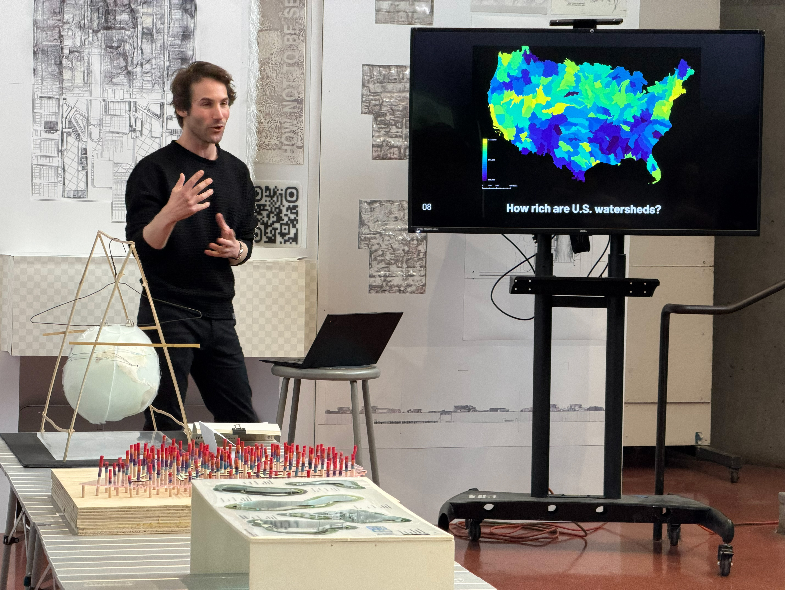

Mark Heller is a computational designer and assistant professor of landscape architecture at Pratt
Institute. He builds tools for urban and landscape analysis by integrating GIS
into creative coding
and parametric scripting environments. Prior to joining Pratt, Heller practiced at Perkins & Will
Boston and taught at the Harvard Graduate School of Design and Wentworth Institute of Technology.
For general inquiries, write to mark@dotmap.us.